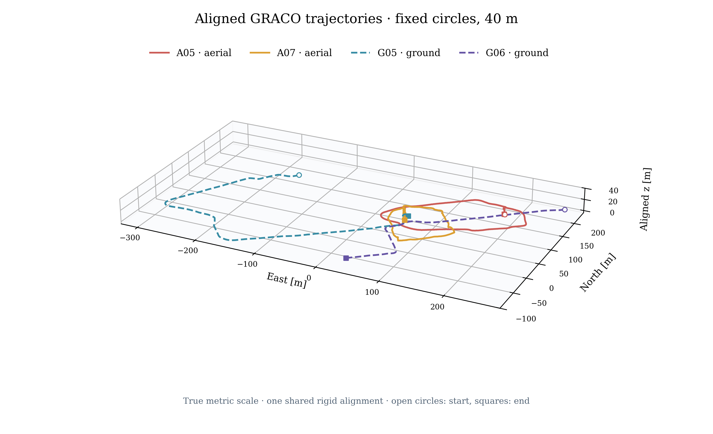
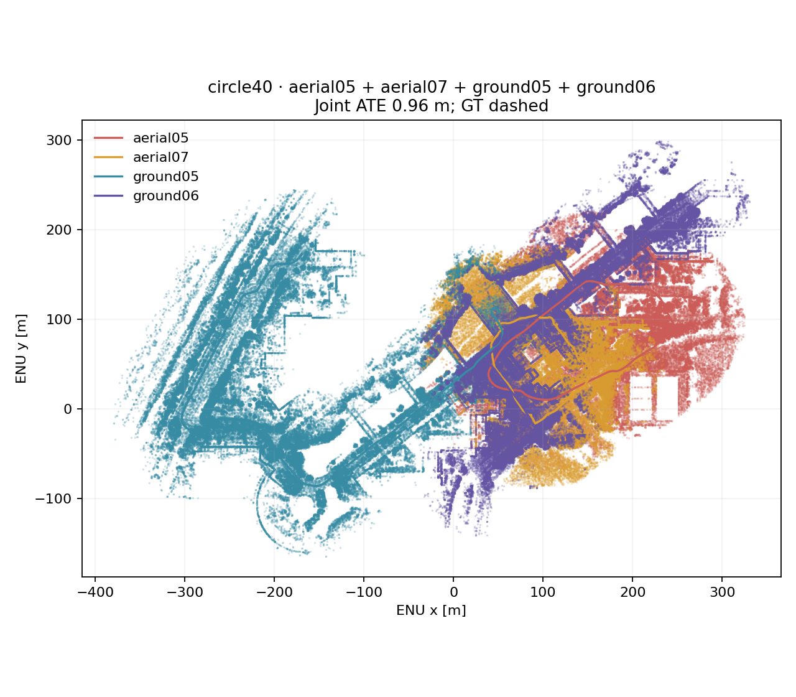
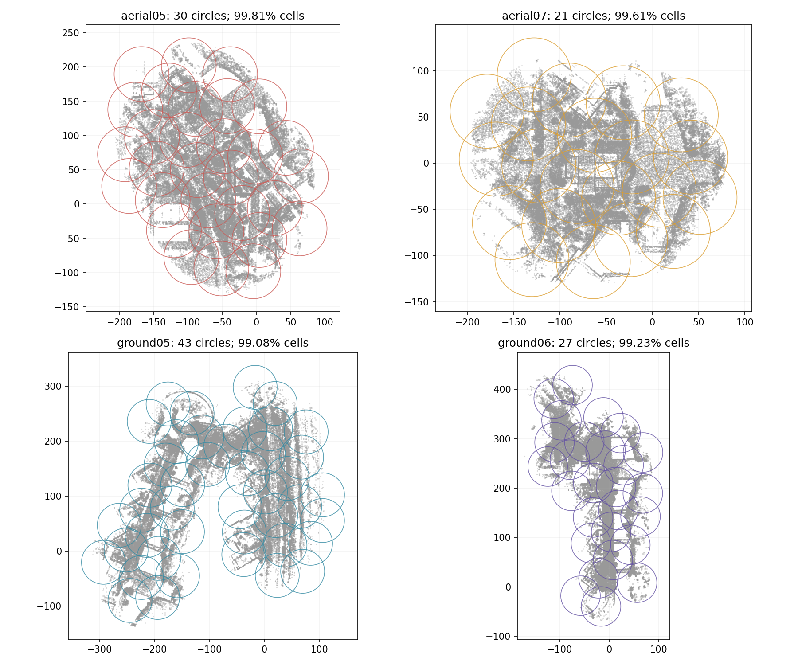
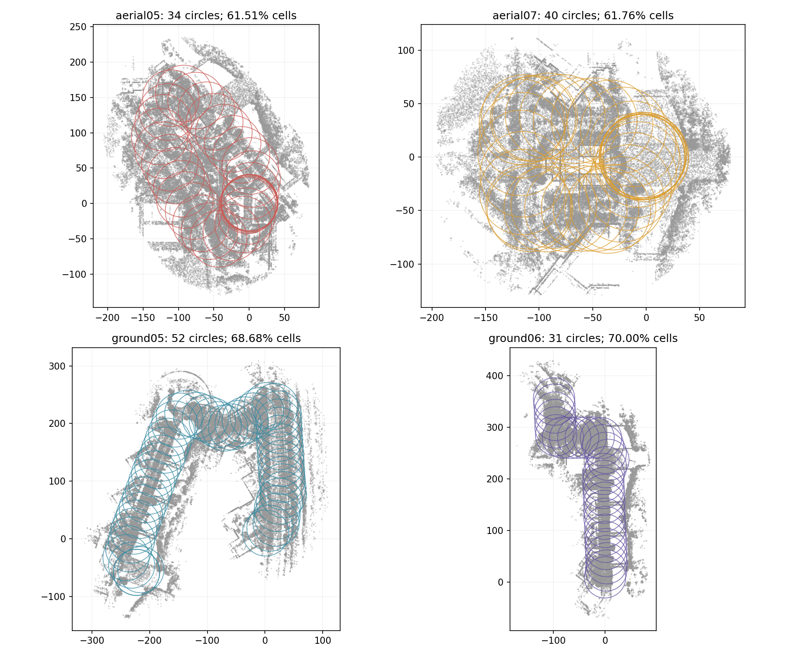
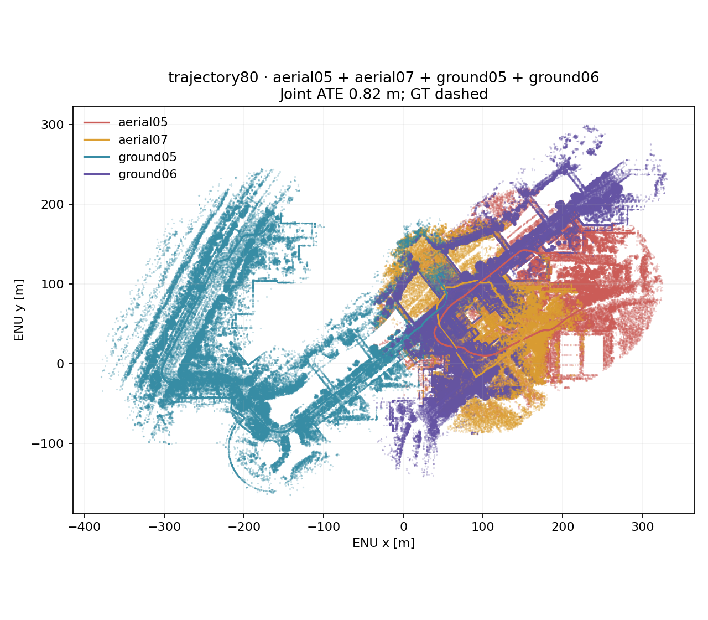
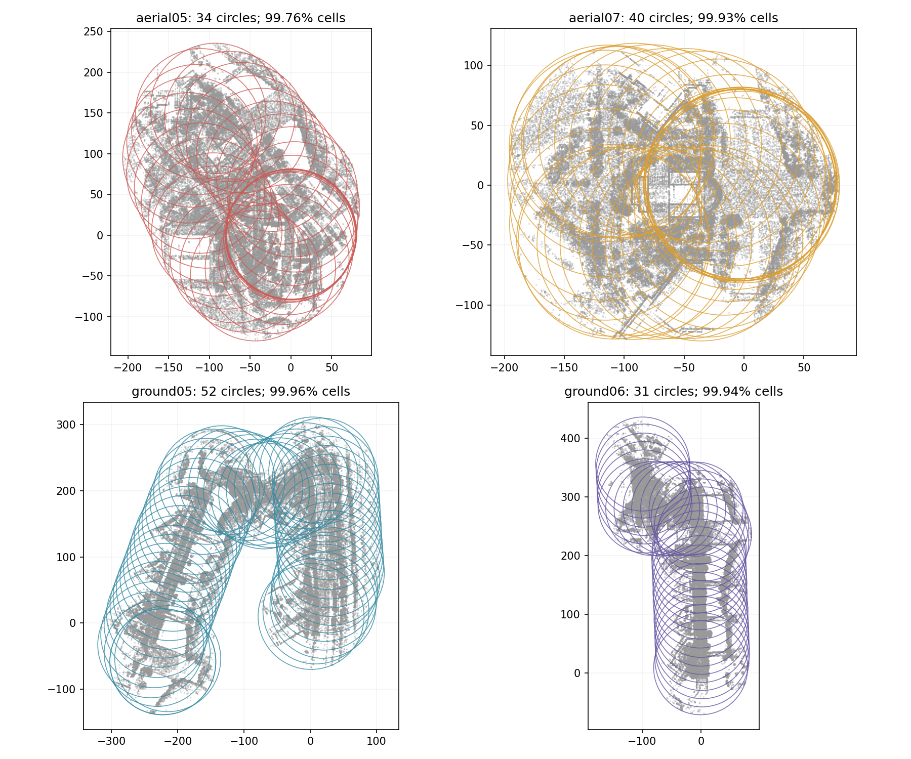

GRACO A05, A07, G05, G06 · staged native point-cloud backend · fixed odometry
Detailed protocol and results · Numeric results
Open the rotatable 3D view · Vector PDF · Trajectory continuity close-ups
All four robots share one alignment. Drag to rotate, hide individual robots, or switch between the circle and trajectory-centered controls. True metric scale is the default.

| Mode | Nodes | Verified / retained loops | GPU factors | Component joint ATE [m] | Communication [MiB] | Measured backend stages [s] | Graph-stage RSS [MiB] |
|---|---|---|---|---|---|---|---|
| circle40 | 121 | 13 / 13 | 13 | aerial05+aerial07+ground05+ground06: 0.96 | 86.07 | 65.0 | 1174 |
| trajectory40 | 157 | 57 / 57 | 57 | aerial05+aerial07+ground05+ground06: 0.90 | 197.78 | 154.6 | 1680 |
| trajectory80 | 157 | 126 / 126 | 125 | aerial05+aerial07+ground05+ground06: 0.82 | 720.50 | 625.2 | 2349 |





| Mode | Robot | Nodes | Occupied-cell coverage | Observed-point coverage | Memberships / covered cell | Median greatest disk overlap | Circles in 20–40% overlap band |
|---|---|---|---|---|---|---|---|
| circle40 | aerial05 | 30 | 99.81% | 99.80% | 1.84 | 30.0% | 100.0% |
| circle40 | aerial07 | 21 | 99.61% | 99.90% | 1.88 | 30.0% | 100.0% |
| circle40 | ground05 | 43 | 99.08% | 99.76% | 1.76 | 30.0% | 100.0% |
| circle40 | ground06 | 27 | 99.23% | 99.86% | 1.76 | 30.0% | 96.3% |
| trajectory40 | aerial05 | 34 | 61.51% | 76.05% | 4.36 | 73.6% | 0.0% |
| trajectory40 | aerial07 | 40 | 61.76% | 75.40% | 7.65 | 89.6% | 0.0% |
| trajectory40 | ground05 | 52 | 68.68% | 83.85% | 4.53 | 77.9% | 0.0% |
| trajectory40 | ground06 | 31 | 70.00% | 83.66% | 4.34 | 77.8% | 0.0% |
| trajectory80 | aerial05 | 34 | 99.76% | 99.95% | 9.80 | 86.8% | 0.0% |
| trajectory80 | aerial07 | 40 | 99.93% | 100.00% | 16.73 | 94.8% | 0.0% |
| trajectory80 | ground05 | 52 | 99.96% | 100.00% | 9.77 | 88.9% | 0.0% |
| trajectory80 | ground06 | 31 | 99.94% | 100.00% | 8.86 | 88.9% | 0.0% |
Coverage uses equally weighted fixed-grid cells. Observed-point coverage weights native retained representatives. Disk overlap is intersection area divided by one circle’s area. Memberships count every containing disk; the final map still emits each observed representative once.
| Mode | Preparation total [s] | Full BEV + ORB [s] | Terrain + layered BEV + ORB [s] | Publication [s] | Retrieval [s] | Verification / transfer [s] | Pose graph [s] | Registration stage [s] | Native preparation [s] | Native optimization [s] |
|---|---|---|---|---|---|---|---|---|---|---|
| circle40 | 36.22 | 0.085 | 5.79 | 2.37 | 48.86 | 11.87 | 0.064 | 1.80 | 0.451 | 0.015 |
| trajectory40 | 81.22 | 0.180 | 11.21 | 3.73 | 99.78 | 45.93 | 1.514 | 3.62 | 0.773 | 0.052 |
| trajectory80 | 141.97 | 0.561 | 30.71 | 5.31 | 180.55 | 412.44 | 15.134 | 11.76 | 1.220 | 0.121 |
Preparation totals are sequential robot preparation times including placement, union/crop construction, payload writing and BEVs. Full-height images are inspection controls. Layer time includes terrain estimation and feature extraction, so it is not pure rendering time. Native preparation and optimization are nested inside the registration stage and must not be added again. These are single measured controls, without repeated-run uncertainty estimates.
| Mode | Cached endpoints | Manifest [MiB] | Geometry [MiB] | Session / solution [MiB] | Total [MiB] |
|---|---|---|---|---|---|
| circle40 | 23 | 35.51 | 50.42 | 0.143 | 86.07 |
| trajectory40 | 51 | 61.80 | 135.79 | 0.184 | 197.78 |
| trajectory80 | 86 | 100.03 | 620.28 | 0.184 | 720.50 |
Bytes are actual serialized requests/replies plus IPC framing. On-demand geometry is transferred once per requested endpoint and reused for verification and registration. This excludes network headers, frontend traffic and inspection downloads.
| Mode | Observed wall [s] | Process-tree CPU [s] | Simultaneous RSS [MiB] | Whole-device GPU peak [MiB] |
|---|---|---|---|---|
| circle40 | 3.25 | 13.90 | 1174 | 447 |
| trajectory40 | 7.20 | 18.10 | 1680 | 645 |
| trajectory80 | 29.59 | 42.17 | 2349 | 915 |
These measurements cover only the fresh corrected graph solve and solution delivery. Detection-capture resource measurements remain in the original run. No sum of historical memory peaks is reported. RSS is sampled every 20 ms and may count shared pages twice. GPU is sampled every 100 ms and includes driver overhead and any unrelated device activity. CPU seconds include ready/solution services and native child processes.
| Mode | Robot | Raw individual ATE [m] | Corrected individual ATE [m] |
|---|---|---|---|
| circle40 | aerial05 | 0.196 | 0.213 |
| circle40 | aerial07 | 0.076 | 0.104 |
| circle40 | ground05 | 0.477 | 0.477 |
| circle40 | ground06 | 0.448 | 0.452 |
| trajectory40 | aerial05 | 0.196 | 0.230 |
| trajectory40 | aerial07 | 0.076 | 0.083 |
| trajectory40 | ground05 | 0.477 | 0.476 |
| trajectory40 | ground06 | 0.448 | 0.449 |
| trajectory80 | aerial05 | 0.196 | 0.209 |
| trajectory80 | aerial07 | 0.076 | 0.074 |
| trajectory80 | ground05 | 0.477 | 0.475 |
| trajectory80 | ground06 | 0.448 | 0.367 |
Each individual row uses its own rigid alignment. The headline joint ATE instead uses one shared alignment for all four robots; individual errors cannot substitute for joint alignment quality.
Results and interpretation · Protocol · Native build hashes · Artifact hashes · Local tests · 148 native tests
circle40: configuration.json · source-hashes.json · communication.jsonl · native-result.json · evaluation.json
circle40/aerial05: placement.json · placement-history.jsonl · keyframes.jsonl · corrected.tum
circle40/aerial07: placement.json · placement-history.jsonl · keyframes.jsonl · corrected.tum
circle40/ground05: placement.json · placement-history.jsonl · keyframes.jsonl · corrected.tum
circle40/ground06: placement.json · placement-history.jsonl · keyframes.jsonl · corrected.tum
trajectory40: configuration.json · source-hashes.json · communication.jsonl · native-result.json · evaluation.json
trajectory40/aerial05: placement.json · placement-history.jsonl · keyframes.jsonl · corrected.tum
trajectory40/aerial07: placement.json · placement-history.jsonl · keyframes.jsonl · corrected.tum
trajectory40/ground05: placement.json · placement-history.jsonl · keyframes.jsonl · corrected.tum
trajectory40/ground06: placement.json · placement-history.jsonl · keyframes.jsonl · corrected.tum
trajectory80: configuration.json · source-hashes.json · communication.jsonl · native-result.json · evaluation.json
trajectory80/aerial05: placement.json · placement-history.jsonl · keyframes.jsonl · corrected.tum
trajectory80/aerial07: placement.json · placement-history.jsonl · keyframes.jsonl · corrected.tum
trajectory80/ground05: placement.json · placement-history.jsonl · keyframes.jsonl · corrected.tum
trajectory80/ground06: placement.json · placement-history.jsonl · keyframes.jsonl · corrected.tum